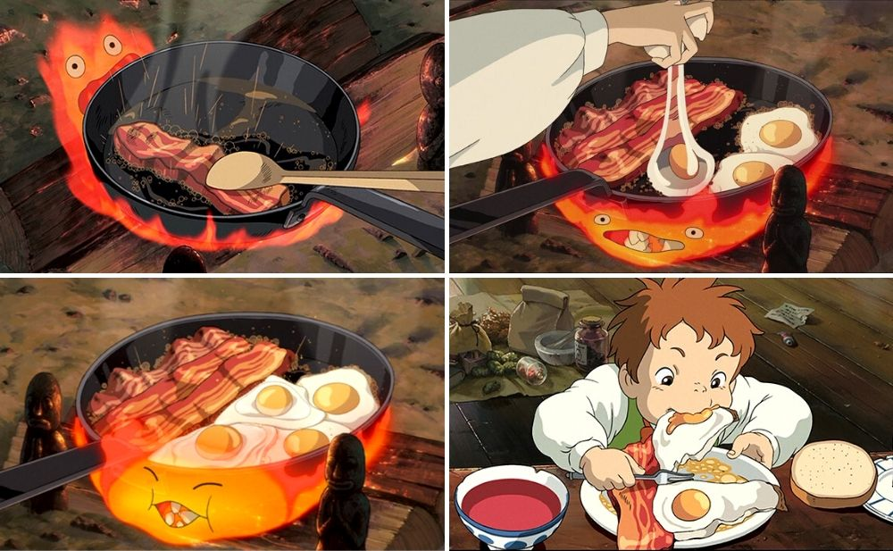

Howl's Moving Castle - Calcifer's Breakfast

Calcifer's Breakfast consists of bacon, eggs, and a side of bread. It was created by a demon fire named Calcifers. This is a fast and easy 3 step meal.
Ingredients:
- x3 thick cut bacon
- x6 eggs
- x1 large onion
- x1 tsp of thyme
- x1 tsp of salt
- x1 large tomato
Steps:
- Heat the frying pan on low heat and fry the bacon until golden brown.
- Chop and mince the onion.
- Season with thyme and salt and fry for 1 minute. Take off the pan
- Move the bacon to a corner of the pan and fry 6 eggs on low heat as well.
- Slice your tomatoes
- Serve together with the eggs, bacv on, tomatoes, and sourdough bread.